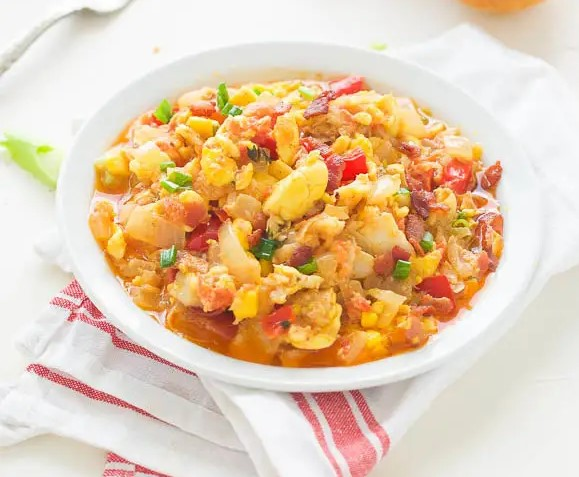

Ackee and Saltfish

Jamaican Ackee and Saltfish – A quintessential Jamaican Breakfast made with ackee, salt fish, onions, tomatoes, red bell pepper, then infused with garlic , thyme and hearty spices; creating a tastebud sensation.
Guys, meet ackee. A fruit, yes indeed. Somewhat related to the lychee family, but for the most part it’s often referred to as a vegetable; creamy, buttery and really delicate in texture. Just one look at it and you would think it is soft scramble eggs, right?
Yes, it literally melts in your mouth. Legendary in Jamaica and mostly used together with salt fish to make a delectable breakfast dish.
In fact, it is said to be Jamaica’s National Dish. Although not indigenous to Jamaica, Ackee is grown throughout Jamaica. It originated from West Africa (not celebrated in Africa like it is in Jamaica), imported to the Caribbean in the 18th Century, as a part of a staple on the plantations. I have vague memories of fresh ackee but just can’t put it together. I’m just not going to sweat it. All I know is that it blows your mind. Delicious! Definitely an exotic breakfast – Fit for a king or queen.
Guess what? You don’t have to be a royal to enjoy this. You can have it right here. Any takers?
You just have to give it a try. I promise you are going to DIG it!!!
Callaloo

Are you bored with spinach, or kale or looking for a new way to prepare it? Here is a vibrant and fresh way of making kale, spinach and definitely using this Amazing vegetable- Callaloo.
If you have never heard of Callaloo, I would say it is what some West Africans Countries call greens. That’s the only way, I ever heard anyone call these leafy vegetables until, I moved to the United States. And there it is disguised as Callaloo. Also widely known in the Islands as Callaloo in the Islands.
For those that are curious and want to know more it belongs to the Amaranth family.
Be on the look out! It is one of those vegetables that easily gets mixed up with other vegetables – especially cocoyam /Malanga leaves and even spinach.
I am super excited that it is readily available in most Caribbean Markets, and quite a few other markets . There is even an Indian market – walking distance from my place, that sells fresh Callaloo. Yeah, lucky me!
What I enjoy most is the different ways you can whip it up; in stews, soups, stir fry and even with rice – it is quite versatile.
Here it is prepared- Jamaican style, slightly steamed, quick, easy . Spiced up with , thyme, garlic and smoked paprika- Simple. And Simply delicious! Convenient for weeknight meal.
Jerk Pork

Jerk pork is believed to have been conceived when the Maroons introduced African meat cooking techniques to Jamaica which were combined with native Jamaican ingredients and seasonings used by the Arawak. The method of smoking meat for a long period of time served two practical purposes, keeping insects away from the raw meat and preserving it for longer once it has been cooked. This process also introduces a strong smoky flavour to the meat.
There are two commonly held theories regarding how the name "Jerk" came to be used. One is that it originates from the Spanish word "Charqui", used to describe dried meat. Over time this term evolved from "Charqui" to "Jerky" to "Jerk". Another theory is that the name derives from the practice of jerking (poking) holes in the meat to fill with spices prior to cooking. Nowadays, the word "Jerk" is used as a noun to describe the seasoning applied to jerked food and as a verb to describe the process of cooking used.
Montego Bay

Here's a picture of one of Jamaica's most popular location: